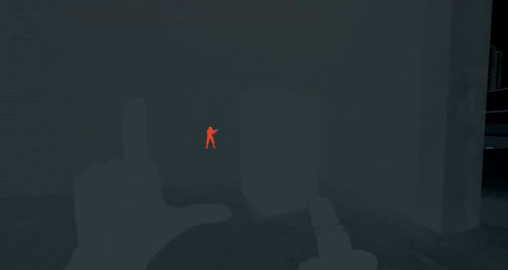
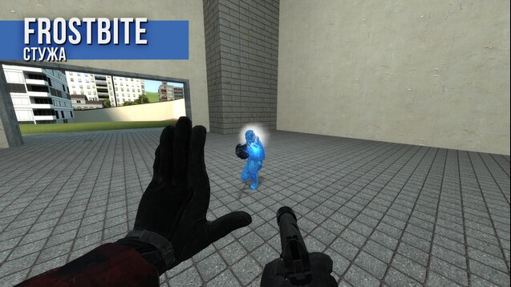
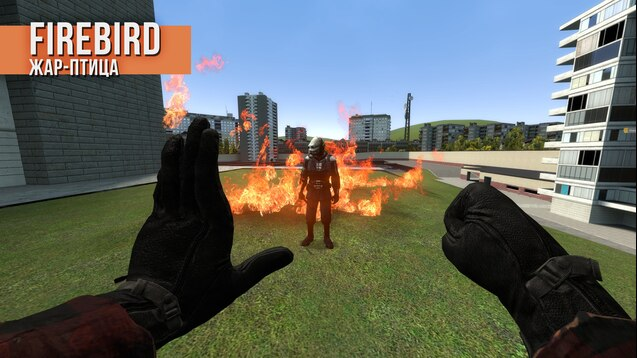
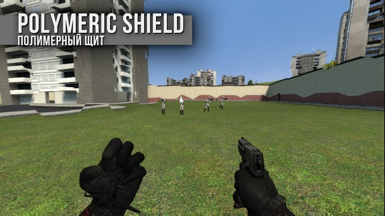
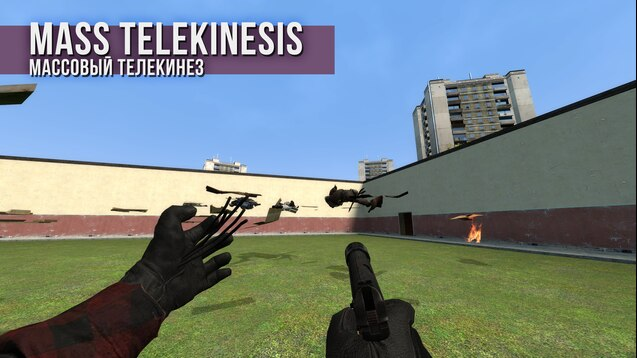
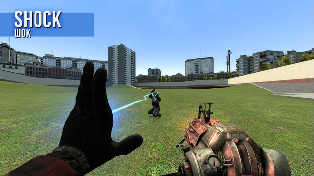
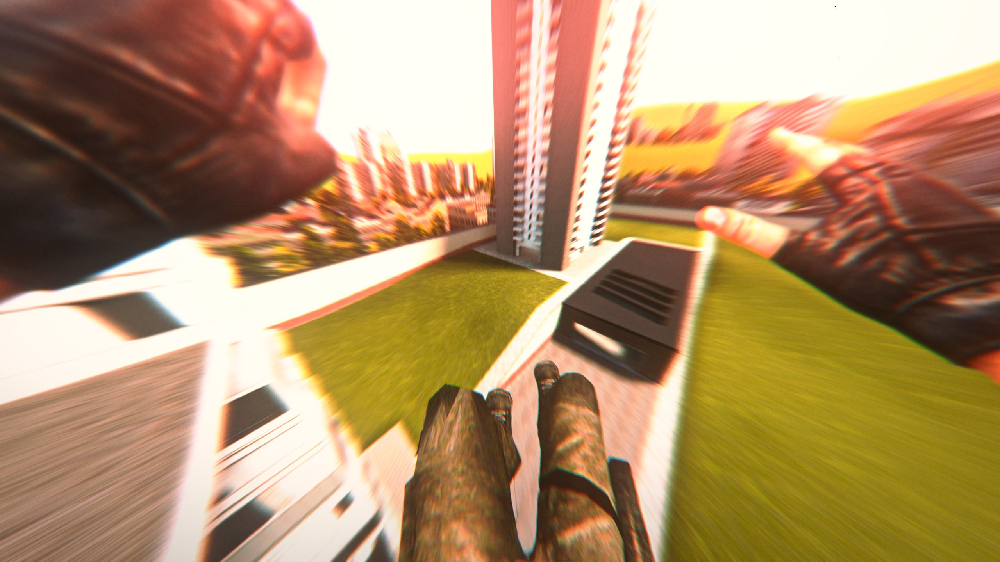

Мы появились 25 июля 2022 года. Начало всей команды задал человек под ником NeAleks, который через некоторое время покинул команду и всё управление перешло Крафтову. Он дал нам название "RG Dev" и под его руководством началась разработка всех аддонов.
Проекты
Project Nenu - это новое меню для Garry's Mod работающее чисто на GLua.
Atomic GMod - это сборка аддонов, сделанная для того что-бы повторить механики и вид игры Atomic Heart
Не обошлось без своих аддонов.
CHARLES | Scanner - Аддон, добавляющий сканер из Atomic Heart.

Atomic Heart: Abilities | CHARLES Glove - Аддон, добавляющий способности перчатки из Atomic Heart
 
 

CHARLES | Looting Animation - Анимация лутинга предметов.
UpgradeStation "NORA" | Upgrade station - Добавляет Элеанору, и заставляет игрока быть рядом что-бы модифицировать оружия
Makarow Pistol / AK-47 Kalash - Оружия из Atomic Heart, со своими кассетниками.
Аддон Black Hole добавляет новые энтити в игру - Чёрные дыры. Одна из них доступна только админам и может съедать пропы, а вторая только притягивает и доступна всем.
Аддон Disintegrator добавляет улучшенный удалитель. с новыми эффектами и возможностями.
HitRush - это сборка-пародия, на режим от datae - Beatrun. В отличие от БитРана, механики паркура можно использовать в любом режиме. И ему не требуется бинарный модуль, который может своровать ваши данные ;)

Fall Effect - Добавляет красивый эффект падения игрока
Cinematic Fall Damage Sound - Добавляет кинематографичный звук падения.
Project Avatar - это режим, сюжет которого основан на кучке испытуемых которые обнаружили себя в симуляции, и учёных чья задача - удержать испытуемых в симуляции. Именно с него началась история RG Dev.
В разработке...
Наша Команда
Глава RG Dev, Саунд-Дизайнер, Дизайнер, Художник, Моделлер, Комьюнити-менеджер
Со-основатель RG Dev, Создатель бекгрундов
Композитор RG Dev
Комьюнити-менеджер
Кодер
Кодер
Маппер
Маппер
Ссылки
Объявления
20.03.23: Сайт обновлён
05.03.23: Выпуск аддона Black Hole
04.03.23: Сайт создан. Вы сейчас на нём!
01.03.23: Выпуск аддона Disintegrator
25.01.23: Пол года RG Dev
29.07.22: Крафтов встал на пост главы команды.
29.07.22: NeAleks сошёл с поста главы команды.
25.06.22: Появление дискорд-сервера PROJECT AVATAR (позднее - RG Dev Community)
25.06.22: Начало разработки Avatar Hunt (позднее - Project Avatar)